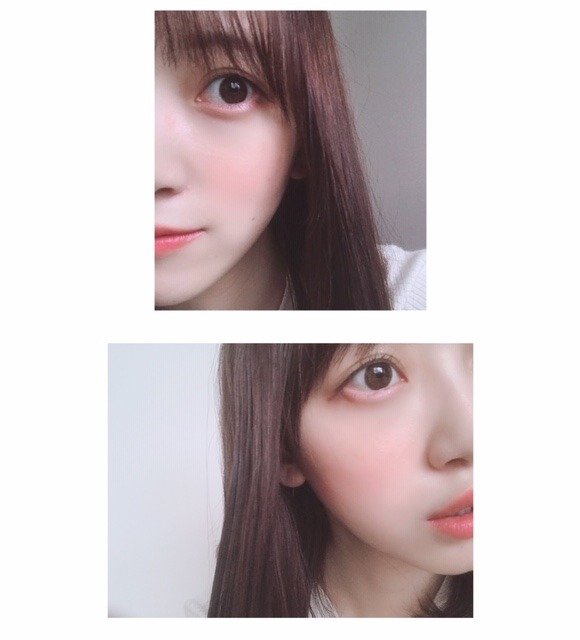

2019/0913Friスリッパはもこもこがいいな

秋ですね☺︎
みなさんは秋を感じることはありましたか？
もうすっかり涼しくて風が気持ちいいです
私の最近はですね、撮影や打ち合わせなどをしています~
早くお知らせしたいこともあるので楽しみに待っていてくださいね！
ほくほくとした食べ物食べたいなぁ

最近買ったもの☺︎
アイシャドウを買ってからハマっているamplitudeで
左から、トランスルーセントエマルジョンファンデーション00番、リキッドファンデーション00番、口紅10番オレンジ、コンスピキュアス チークス5番、を買いました〜❤︎

左のファンデーションはお直し用に買ったのですが意外とコンパクトで持ち歩きやすいし、質感がややクリーミーでこれからの季節メイクした上からこれを指や筆で重ねてもパサつかなそうで、ひとまず、ほっとしています。
リキッドファンデーションは、すうっと肌に馴染むのにカバー力もあるしつけた瞬間モチっとサラッとしてるから仕上げのお粉がいらなくて！
これからの季節、乾燥しちゃうからめちゃくちゃ頼りになります！！！
ツヤ感も出て上品なツヤ肌になれました
たまには季節でファンデを変えてみるのもアリかも☺︎

口紅10番は、深みのあるおしゃれなオレンジで一目惚れ！
つけてみたら嫌味のない柔らかい発色でじゅわっと甘顔になれました❤︎
口紅の香りがアールグレイの香りで唇はむはむ食べちゃいたくなるくらい良い匂いで美味しいから、かなりお気に入り☺︎
チークはわたしはブルベ夏だと思ってるので深みのあるピンクローズにしました！全然肌くすまないし、優しい顔になれます~
ハイライトも付いているのでハイライトを頬骨の高いところと頬の内側(目頭下から小鼻横まで)と唇のお山の上(人中)にささっと塗ってから
チークブラシでマルを描きながらチークをいれていきます☺︎
チークの入れ方で顔の印象や輪郭の見え方も変わるからチークブラシを入れる時はかなり気をつけてて、
わたしは立体感と柔らかさを出すために幅広くまるくチークをくるくるいれてます❤︎

ああ！腹筋しなきゃ！と思っても寝てしまう~
だれか起こして~ 笑
秋も眠いみたい。ずっとずっと眠い。
では
2019/09/13 16:36
コメント(283)
メイクがどタイプです！
未央奈可愛い〜大好き更新ありがとう！
未央奈可愛い〜大好き更新ありがとう！
ブログ更新、ありがとー！
季節に合わせて、
キレイを楽しむワクワク感、
すごく伝わってきたー！
元気もらって３連休突入だぜ！！
季節に合わせて、
キレイを楽しむワクワク感、
すごく伝わってきたー！
元気もらって３連休突入だぜ！！
未～央奈❤️
今日もブログ更新ありがとう！
ブログとか読んだり、未央奈の活動を見て元気もらってるよ～！
乃木坂46新聞、発売するって朝知って仕事終わりに買ってきたよ！
早速読みます～！
報告楽しみにしてる～！
今日もブログ更新ありがとう！
ブログとか読んだり、未央奈の活動を見て元気もらってるよ～！
乃木坂46新聞、発売するって朝知って仕事終わりに買ってきたよ！
早速読みます～！
報告楽しみにしてる～！
好きやよ！
ほう ほう
男性にはわからん
男性にはわからん
ブログ更新ありがとう！
未央奈ちゃん可愛いー
未央奈ちゃんはなんのメイクしてもほんと似合ってる
未央奈ちゃん可愛いー
未央奈ちゃんはなんのメイクしてもほんと似合ってる
未央奈可愛いー！
こんばんは。ブログ更新ありがとうございます。
我が家の周りでも、鈴虫が鳴いて秋を感じます。私は毎年、食欲の秋と芸術の秋ですね！！いや、芸術も食欲も一年中でした～。スポーツ観戦にも良い季節だと思います。私はサッカーファンなので、テレビもスタジアムも大好きです。私は寒い方が体調的に楽なので、秋冬は楽しみです。
ではまた。
我が家の周りでも、鈴虫が鳴いて秋を感じます。私は毎年、食欲の秋と芸術の秋ですね！！いや、芸術も食欲も一年中でした～。スポーツ観戦にも良い季節だと思います。私はサッカーファンなので、テレビもスタジアムも大好きです。私は寒い方が体調的に楽なので、秋冬は楽しみです。
ではまた。
更新ありがとう！！
メイクのこと上げてくれるの嬉しい！すごい役に立ちます！
メイクのこと上げてくれるの嬉しい！すごい役に立ちます！
みおちゃんブログ更新ありがとう！
スリッパはモコモコがいいのめっちゃわかる！
可愛いよね( ⸝⸝⸝¯ ¯⸝⸝⸝ )♡
メイク講座めっちゃ嬉しい！！！
オレンジ系で迷ってるものがあったから、
未央奈ちゃん使ってるものを
買ってみるね٩(๑'о'๑)و✧*
いつもありがとう
スリッパはモコモコがいいのめっちゃわかる！
可愛いよね( ⸝⸝⸝¯ ¯⸝⸝⸝ )♡
メイク講座めっちゃ嬉しい！！！
オレンジ系で迷ってるものがあったから、
未央奈ちゃん使ってるものを
買ってみるね٩(๑'о'๑)و✧*
いつもありがとう
みおちゃんブログ更新ありがとう♪
なんでそんなに可愛いの……ファッションブログで毎回登場するブランド名が読めない私です←
無知すぎてごめんね……
秋と言えば食欲、運動、読書、色々あるね！！
今から楽しみだなー´ω`)ﾉ
10月から仕事決まったから新しい環境に飛び込むから頑張ります！！
福岡のトゥモロー⊿
なんでそんなに可愛いの……ファッションブログで毎回登場するブランド名が読めない私です←
無知すぎてごめんね……
秋と言えば食欲、運動、読書、色々あるね！！
今から楽しみだなー´ω`)ﾉ
10月から仕事決まったから新しい環境に飛び込むから頑張ります！！
福岡のトゥモロー⊿
更新ありがとう
写真かわいい
涼しいね、秋ですね
今日は十五夜ですね、未央奈ちゃん月見えましたか？
僕は、曇ってて見えません。
芋おいしいですよね。
未央奈ちゃん大好き
写真かわいい
涼しいね、秋ですね
今日は十五夜ですね、未央奈ちゃん月見えましたか？
僕は、曇ってて見えません。
芋おいしいですよね。
未央奈ちゃん大好き
未央奈さん可愛いすぎますって❗️
焼き芋、焼き栗、焼き秋刀魚は要らんかね～
お疲れ様なのです└(ﾟ∀ﾟ└) (┘ﾟ∀ﾟ)┘
堀ちゃんは本当に可愛い(*≧з≦)よ～
最初は声に一目惚れ(///ω///)♪
今は色んな事に努力してる所に惚れてます！(σ*´∀｀)
体調に気を付けて(´＿｀。)ﾞ
んじゃね～！Σ⊂(ﾟДﾟ )
寒い季節のモコモコ小さな幸せ( ≧∀≦)ノ
お疲れ様なのです└(ﾟ∀ﾟ└) (┘ﾟ∀ﾟ)┘
堀ちゃんは本当に可愛い(*≧з≦)よ～
最初は声に一目惚れ(///ω///)♪
今は色んな事に努力してる所に惚れてます！(σ*´∀｀)
体調に気を付けて(´＿｀。)ﾞ
んじゃね～！Σ⊂(ﾟДﾟ )
寒い季節のモコモコ小さな幸せ( ≧∀≦)ノ
夏でもね もこもこスリッパ 使ってた
冬に履くようなんだけどね(笑)
昨日の日中の涼しさで秋を。
その前日は暑かったのにな～
いしや～～
アルバイトアルバイト。
お姉ちゃん。
腹筋しないの？
ねぇ～～
お姉ちゃん。
冬に履くようなんだけどね(笑)
昨日の日中の涼しさで秋を。
その前日は暑かったのにな～
いしや～～
アルバイトアルバイト。
お姉ちゃん。
腹筋しないの？
ねぇ～～
お姉ちゃん。
あまりブログとかにはコメントしないし、ほかの乃木坂メンバーのブログもあんまり読まないのですが未央奈ちゃんのブログは毎回可愛くておしゃれで大好きです…！未央奈ちゃんは映画に出てくるヒロインみたいだなぁと思ってます
メイクやファッションなどもとっても参考になります 秋はお洋服もメイクもとっても可愛いので秋の未央奈ちゃんの装いが楽しみです
秋のリップに迷っているので、よければおすすめがあれば教えてください！
男性ファンの方からはあまり好評ではないかもしれませんが、私は未央奈ちゃんの女の子は最高と思わせてくれるブログを楽しみにしています
メイクやファッションなどもとっても参考になります 秋はお洋服もメイクもとっても可愛いので秋の未央奈ちゃんの装いが楽しみです
秋のリップに迷っているので、よければおすすめがあれば教えてください！
男性ファンの方からはあまり好評ではないかもしれませんが、私は未央奈ちゃんの女の子は最高と思わせてくれるブログを楽しみにしています
未央奈さん今日も、可愛いですね❤️
ぼくはずっと眠いです
これからも頑張ってくださいね
ぼくはずっと眠いです
これからも頑張ってくださいね
堀さんはさつまいも好きですか？
ブログ更新ありがとう！
情報解禁楽しみにしてる！
またメイクのお話をしてくれてありがとうございます～
堀ちゃんの見てメイクの勉強します
情報解禁楽しみにしてる！
またメイクのお話をしてくれてありがとうございます～
堀ちゃんの見てメイクの勉強します
みおなちゃん❗
こんばんは。
モバメ、ブログの更新、ありがとう❗❗
ホクホクしたものが、食べたいですね。
みおな❗❗ おしゃれでかわいいよ。♥
今日は、「高校生クイズ」でてましたね。
落ち着いた雰囲気が、素敵です。♥
よく休んでくださいね。
こんばんは。
モバメ、ブログの更新、ありがとう❗❗
ホクホクしたものが、食べたいですね。
みおな❗❗ おしゃれでかわいいよ。♥
今日は、「高校生クイズ」でてましたね。
落ち着いた雰囲気が、素敵です。♥
よく休んでくださいね。
ブログ更新ありがとう！
お写真可愛すぎて可愛すぎて…！♡
購入品だけじゃなくて使い心地まで教えてくれるの本当に嬉しい︎☺︎
チークの入れ方結構流れ作業になりがちだから、改めて研究したいなぁと思いました(＞＜)
オレンジリップがすごく可愛くて気になる…！アールグレイの香りなのも素敵！リップの味わりと気になる方だから…笑
お知らせ楽しみにしてます⸜(*ˊᵕˋ*)⸝
お写真可愛すぎて可愛すぎて…！♡
購入品だけじゃなくて使い心地まで教えてくれるの本当に嬉しい︎☺︎
チークの入れ方結構流れ作業になりがちだから、改めて研究したいなぁと思いました(＞＜)
オレンジリップがすごく可愛くて気になる…！アールグレイの香りなのも素敵！リップの味わりと気になる方だから…笑
お知らせ楽しみにしてます⸜(*ˊᵕˋ*)⸝
未央奈ちゃんこんばんわ
ブログ更新ありがとね。
今日もおしゃれですっごいかわいいよ。
ホクホクしたものは肉まんかな。
腹筋したの
起きろー！
寝るなー
ではでは
ブログ更新ありがとね。
今日もおしゃれですっごいかわいいよ。
ホクホクしたものは肉まんかな。
腹筋したの
起きろー！
寝るなー
ではでは
涼しくなって過ごしやくていいですね。
いつの間にか季節は巡ってますねぇ。
お知らせ楽しみにしてますね。
いつの間にか季節は巡ってますねぇ。
お知らせ楽しみにしてますね。
みおなのメイク真似したい
私もブルベで(冬か夏かはびみょー)すごく青みピンクとか好きで…アイシャドーの色はざっ好きな色！！って感じです！
秋の色の感じが個人的に好きなので(ちょいブラウン入った感じ)なんか教えてくれると嬉しいです！
そういえば！！！！新曲に今更ながらはまってます！
4期生との絡みとか後輩との絡みが見たいです！あと飛鳥ちゃんも！！！
私もブルベで(冬か夏かはびみょー)すごく青みピンクとか好きで…アイシャドーの色はざっ好きな色！！って感じです！
秋の色の感じが個人的に好きなので(ちょいブラウン入った感じ)なんか教えてくれると嬉しいです！
そういえば！！！！新曲に今更ながらはまってます！
4期生との絡みとか後輩との絡みが見たいです！あと飛鳥ちゃんも！！！
ブログ更新ありがとー！
涼しくて過ごしやすくなりましたね〜
秋はやっぱ秋刀魚が好きです〜
涼しくて過ごしやすくなりましたね〜
秋はやっぱ秋刀魚が好きです〜
未央奈、ブログ更新ありがとう！
僕も最近やっと秋感じてるよー！
僕の実家の地域は祭りが来ると秋って感じがするよー！
早くこーい！！って感じ！！
写真もたくさんありがとねー！！
僕も最近やっと秋感じてるよー！
僕の実家の地域は祭りが来ると秋って感じがするよー！
早くこーい！！って感じ！！
写真もたくさんありがとねー！！
美しい。
みおな
今日もお疲れ様です
すっかり涼しくなりましたね
白Tシャツ1枚は少し寒くなったので、そろそろ羽織る物を重ね着したいと思います
ホクホクしたものなら焼き芋食べたい
下ろしてみると髪の毛、結構長くなりましたね
数年前はショートのイメージがあったけど、ロングでもすごく可愛いです
ストレートが個人的に一番好きな女の子の髪型なので、みおながやってくれると嬉しいです（シンプルイズベスト）
化粧品の知識は無いけど、00番とかは、色の濃さなんだね（話題についていきたいからちょっと調べてみた）
値段も高いけど、手が出せない訳ではなさそうって事も分かりました
これからも、メイクの研究成果を見せて下さい
最後のワンピースの写真は、乃木坂の堀未央奈だって知らない人でも、すれ違えば思わず振り返るくらいの綺麗な人って感じだね（どこかの財閥の令嬢みたい笑）
風邪引かないように気をつけて下さい
月曜日の握手会も頑張って下さい
これから大阪に行ってきます
ありがとうございました
今日もお疲れ様です
すっかり涼しくなりましたね
白Tシャツ1枚は少し寒くなったので、そろそろ羽織る物を重ね着したいと思います
ホクホクしたものなら焼き芋食べたい
下ろしてみると髪の毛、結構長くなりましたね
数年前はショートのイメージがあったけど、ロングでもすごく可愛いです
ストレートが個人的に一番好きな女の子の髪型なので、みおながやってくれると嬉しいです（シンプルイズベスト）
化粧品の知識は無いけど、00番とかは、色の濃さなんだね（話題についていきたいからちょっと調べてみた）
値段も高いけど、手が出せない訳ではなさそうって事も分かりました
これからも、メイクの研究成果を見せて下さい
最後のワンピースの写真は、乃木坂の堀未央奈だって知らない人でも、すれ違えば思わず振り返るくらいの綺麗な人って感じだね（どこかの財閥の令嬢みたい笑）
風邪引かないように気をつけて下さい
月曜日の握手会も頑張って下さい
これから大阪に行ってきます
ありがとうございました
未央奈ちゃんとお揃いのコスメ買うね〜 本当に本当に未央奈ちゃんみたいなかわいい女の子に憧れます(*˘꒳˘*) 私も腹筋して寝なきゃ〜
本当に本当に未央奈ちゃんみたいなかわいい女の子に憧れます(*˘꒳˘*) 私も腹筋して寝なきゃ〜
秋を感じること。涼しさも然り、日の出だったり陽が沈む時間帯でも秋を感じたり(^_^)
そして、涼しくなってくると自然と眠気も発生しやすくなるよねぇ...(-.-)Zzz 堀ちゃんの...。寝顔を見てみたい!!!(*￣▽￣*)笑
そして、涼しくなってくると自然と眠気も発生しやすくなるよねぇ...(-.-)Zzz 堀ちゃんの...。寝顔を見てみたい!!!(*￣▽￣*)笑
ちゃんと腹筋しましょう
ヤッホーみおなちゃん！高校生クイズ見たよ〜。いろんな発想があって白熱したね！輪投げのやつでのコメントもよかったよ！
秋の調べ...コオロギの歌声
ホクホク...焼きイモ？（冬）...かぼちゃ？ う～ん、何？
自分はシャリシャリが食べたい
あっ、季節関係ないけどオムライス..オムライス食べたい！
アールグレイは大好き！ 香りに魅了されるよねぇ～
唇をはむはむしたい気持ち分かるかも...
最後の写真大好き！ おでこが可愛い...堪らん！
腹筋？..腹筋...常に３日坊主で終わったなぁ～
本格的にやるなら、やっぱジムじゃね？
でも筋肉質にはならないで。
未央奈の６パット...見たくない、見たくない（笑）
眠い、眠い、直ぐ寝ちゃう、よく分かる！
昼寝から覚めると外が薄暗い...え？朝？夜？
何時？なんで？ヤバい？！...なんて焦る事ないですか？
結局夕方でほっとするなんて事が...
秋だからね～、涼しくて夜が過ごしやすくなるからね～
寝てると気持ち良い良いだねー。
自分は寝る事が得意だった！よく眠る眠る、眠ってた
未央奈は眠いだけ？ やっぱ、寝るに限るでしょ！
またしばらく蒸し暑くなるって天気予報....
って言えば「天気の子」...めっちゃ良かった。
...愛に出来る事はまだあるか～い？
僕に出来る事はまだあ～るかい？...急に変？（笑）
未央奈はアニメの声優なんて興味ある？
ホクホク...焼きイモ？（冬）...かぼちゃ？ う～ん、何？
自分はシャリシャリが食べたい
あっ、季節関係ないけどオムライス..オムライス食べたい！
アールグレイは大好き！ 香りに魅了されるよねぇ～
唇をはむはむしたい気持ち分かるかも...
最後の写真大好き！ おでこが可愛い...堪らん！
腹筋？..腹筋...常に３日坊主で終わったなぁ～
本格的にやるなら、やっぱジムじゃね？
でも筋肉質にはならないで。
未央奈の６パット...見たくない、見たくない（笑）
眠い、眠い、直ぐ寝ちゃう、よく分かる！
昼寝から覚めると外が薄暗い...え？朝？夜？
何時？なんで？ヤバい？！...なんて焦る事ないですか？
結局夕方でほっとするなんて事が...
秋だからね～、涼しくて夜が過ごしやすくなるからね～
寝てると気持ち良い良いだねー。
自分は寝る事が得意だった！よく眠る眠る、眠ってた
未央奈は眠いだけ？ やっぱ、寝るに限るでしょ！
またしばらく蒸し暑くなるって天気予報....
って言えば「天気の子」...めっちゃ良かった。
...愛に出来る事はまだあるか～い？
僕に出来る事はまだあ～るかい？...急に変？（笑）
未央奈はアニメの声優なんて興味ある？
ブログ更新ありがとう！
腹筋鍛えようと横になると寝てしまう。
なんて平和なんでしょう。
これから応援してます。
腹筋鍛えようと横になると寝てしまう。
なんて平和なんでしょう。
これから応援してます。
こんばんは
朝夕が涼しくなってくると秋だなぁって感じます。
打ち合わせされているようですね。報告楽しみにしてます。
朝夕が涼しくなってくると秋だなぁって感じます。
打ち合わせされているようですね。報告楽しみにしてます。
かわいすぎ。
腹筋しようとして寝てしまう堀ちゃんに、待ち時間や立ってる時に出来る腹筋鍛え術を1つお教えします！
「ドローイン」っていうやつなんですけど、これは体幹トレーニングと言って体の芯を鍛える運動で、体幹がしっかりしてると姿勢が良くなったり運動による疲れが少なくなります！ライブとかに生かせるかなと…もちろんお腹も凹みますよ
ドローインはすごく簡単な体幹トレーニングです。
1.お腹を凹ます 2.お腹を膨らませないように呼吸する。鼻で吸って口でゆっくり吐く。
これだけです
地味ですが効果はありますよ！あとどこでもできるし！
ぜひやってみてください
「ドローイン」っていうやつなんですけど、これは体幹トレーニングと言って体の芯を鍛える運動で、体幹がしっかりしてると姿勢が良くなったり運動による疲れが少なくなります！ライブとかに生かせるかなと…もちろんお腹も凹みますよ
ドローインはすごく簡単な体幹トレーニングです。
1.お腹を凹ます 2.お腹を膨らませないように呼吸する。鼻で吸って口でゆっくり吐く。
これだけです
地味ですが効果はありますよ！あとどこでもできるし！
ぜひやってみてください
秋のいい余韻やね。
最近はめっきり風が冷たくなりましたね。
情報解禁楽しみに待ってます。
未央奈さんまた一段とキレイになりましたね。
情報解禁楽しみに待ってます。
未央奈さんまた一段とキレイになりましたね。
未央奈～ こんにちは
「うたコン」おつかれさまでした。あやめちゃんのために時間を工夫しての放送、何気に見ていると見過ごしてしまいますが、スタッフさんの心遣いに感謝ですね。
「高校生クイズ」、こちらも見ましたよ。桜丘高校がまさかの脱落でしたが、高校生の頑張りというか、想像を超えた発想力に感心させられましたね。
全ツーが終わり、この高校生クイズが終わると、いよいよ「秋」を感じますね。そういえば、今日は「中秋の名月」、あいにくの天気でしたが、やっと涼しくなってきたことを実感します。
季節の変わり目です。くれぐれも体調管理には気をつけてくださいね。
「うたコン」おつかれさまでした。あやめちゃんのために時間を工夫しての放送、何気に見ていると見過ごしてしまいますが、スタッフさんの心遣いに感謝ですね。
「高校生クイズ」、こちらも見ましたよ。桜丘高校がまさかの脱落でしたが、高校生の頑張りというか、想像を超えた発想力に感心させられましたね。
全ツーが終わり、この高校生クイズが終わると、いよいよ「秋」を感じますね。そういえば、今日は「中秋の名月」、あいにくの天気でしたが、やっと涼しくなってきたことを実感します。
季節の変わり目です。くれぐれも体調管理には気をつけてくださいね。
ほりっぴ～、ナンチです♪
ブログ更新ありがとう～
フォトブックのお知らせだとうれしいなぁ
今週末も仕事
頑張るしかないね
ブログ更新ありがとう～
フォトブックのお知らせだとうれしいなぁ
今週末も仕事
頑張るしかないね
ブログ更新ありがとうございます☺︎初めてコメントします！
みおなちゃんのブログ、美容やファッションのことたくさん書いてくれて女の子的にとっても参考になります！
秋冬のベースメイクどうしようかな〜と思ってたので参考にさせてまらいます！
チークの入れ方いつもなんとなくで終わらせてしまうので
研究してみようかなあと思いました☺︎
みおなちゃんのブログ読むと美意識ぐぐっと上がります〜ありがとう♡また更新楽しみにしてます
みおなちゃんのブログ、美容やファッションのことたくさん書いてくれて女の子的にとっても参考になります！
秋冬のベースメイクどうしようかな〜と思ってたので参考にさせてまらいます！
チークの入れ方いつもなんとなくで終わらせてしまうので
研究してみようかなあと思いました☺︎
みおなちゃんのブログ読むと美意識ぐぐっと上がります〜ありがとう♡また更新楽しみにしてます
新しいメイク道具でまた美しくなるね
堀さん、こんばんは。ブログ更新してくれてありがとうございます。
僕はメイクのことは分かりませんが、堀さんが美しすぎることは一目瞭然ですし、ブルベ夏とかの知らない単語検索するのは知らない世界が知れて結構面白かったりします。
あと高校生クイズ見ました。京都の高校が柱に輪っかをまとめて入れたときに堀さんが嬉しそうに笑ってたのが印象的で、その後のコメントも見事でした。頭のいい人達の頑張る姿は見ごたえがありますね。
あと僕もアス見ましたよ。怖がらせて面白がらせて考えさせる良い映画でしたね。敵が死ぬのかすら分からないあの不安さは、初めてゾンビ映画が生まれたときのワクワクと似てるんじゃないかなって思いました。
眠いのは疲れが溜まってるからかもしれないですね。なので旬のもの沢山食べて沢山眠ってくださいね。芋栗秋刀魚柿を、在庫ゼロで旬を強制終了させるくらい沢山食べてくださいね。
僕はメイクのことは分かりませんが、堀さんが美しすぎることは一目瞭然ですし、ブルベ夏とかの知らない単語検索するのは知らない世界が知れて結構面白かったりします。
あと高校生クイズ見ました。京都の高校が柱に輪っかをまとめて入れたときに堀さんが嬉しそうに笑ってたのが印象的で、その後のコメントも見事でした。頭のいい人達の頑張る姿は見ごたえがありますね。
あと僕もアス見ましたよ。怖がらせて面白がらせて考えさせる良い映画でしたね。敵が死ぬのかすら分からないあの不安さは、初めてゾンビ映画が生まれたときのワクワクと似てるんじゃないかなって思いました。
眠いのは疲れが溜まってるからかもしれないですね。なので旬のもの沢山食べて沢山眠ってくださいね。芋栗秋刀魚柿を、在庫ゼロで旬を強制終了させるくらい沢山食べてくださいね。
未央奈～☆☆
今日帰りに外へ出るとき、
もあーっとする感じを想像してたら
めちゃくちゃ涼しくてびっくりした。
いやーもうすっかり秋だね～
未央奈の髪の長さも秋に似合う感じになってきたね。
今日帰りに外へ出るとき、
もあーっとする感じを想像してたら
めちゃくちゃ涼しくてびっくりした。
いやーもうすっかり秋だね～
未央奈の髪の長さも秋に似合う感じになってきたね。
かわいい➰
未央奈ちゃん!
ブログ更新ありがとう!
美を表現する為にいろいろ努力しているんですね。
応援してるよ☺️☺️
ブログ更新ありがとう!
美を表現する為にいろいろ努力しているんですね。
応援してるよ☺️☺️
堀さん、おはようございます。
僕が秋を感じるのは、空に刷毛ですっとはいたような、いかにも秋らしい雲を見上げたときでしょうか。すっきり晴れた青空に羊雲がふわふわ浮かんでいるのも秋らしくてすてきです。
ようやくここ数日で涼しくなってきた気がします。空気も少しずつ秋らしいものに変わってきているのかな。メイクも夏とはまた一味ちがった色合いや肌触りのものに変わっていくのでしょう。秋には秋らしいおしゃれの楽しみ。いいですね。
ではまたコメントします。腹筋運動、がんばりましょう（笑）。
さらばだ、また会おう！（気球に乗って去りぬ〜）
僕が秋を感じるのは、空に刷毛ですっとはいたような、いかにも秋らしい雲を見上げたときでしょうか。すっきり晴れた青空に羊雲がふわふわ浮かんでいるのも秋らしくてすてきです。
ようやくここ数日で涼しくなってきた気がします。空気も少しずつ秋らしいものに変わってきているのかな。メイクも夏とはまた一味ちがった色合いや肌触りのものに変わっていくのでしょう。秋には秋らしいおしゃれの楽しみ。いいですね。
ではまたコメントします。腹筋運動、がんばりましょう（笑）。
さらばだ、また会おう！（気球に乗って去りぬ〜）
未央奈、ブログ更新ありがとう＼(^o^)／
涼しくなってきたね！
もう秋だね(*´∀｀)
お知らせ楽しみにしてるよ(*^O^*)
起こすよ！任せて！
撮影、打ち合わせ等で忙しいと思うけど、無理しないでね！
沢山、写真アップしてたくれてありがとう(*≧∀≦*)
どの未央奈もかわいい(///∇///)
では(*￣∇￣)ノ
涼しくなってきたね！
もう秋だね(*´∀｀)
お知らせ楽しみにしてるよ(*^O^*)
起こすよ！任せて！
撮影、打ち合わせ等で忙しいと思うけど、無理しないでね！
沢山、写真アップしてたくれてありがとう(*≧∀≦*)
どの未央奈もかわいい(///∇///)
では(*￣∇￣)ノ


もこもこスリッパを履く姿、きっと可愛いことでしょう、と妄想。
日に日に涼しくなってきましたね。
油断は禁物ですね。
秋を感じたのは、朝の空と夜の虫の鳴き声ですかね。
都会の真ん中でも、コオロギの合唱は和みます。
お忙しいそうだと思ったら、撮影と打ち合わせとは気になりますが、楽しみはとっておくもの、幸せですよ、ありがとうございます！
ほくほくしたもの食べたくなりますね、自分は真っ先に焼き芋です。
愛犬も好きなので、シェアしながら幸せ気分。
コスメの紹介、これで多くの女の子がキラキラと可愛くなってくれて欲しいですね。
ar読みましたよ。ワントーンもオシャレですね。
自分は冒頭のホワイトとオレンジとくすみピンクが特に印象的でした。
世の中の女の子達をキラキラと可愛く輝いてくれると良いですよね。
お疲れですね。
腹筋は継続が大切かな、自分は遠目に見ると割れてます。遠目で。。
でも睡眠はそれ以上に大切ですね。
睡眠をしっかりとして、明日に繋げて欲しいです。
明日も輝いた未央奈さんでね。
頑張って行きましょう！